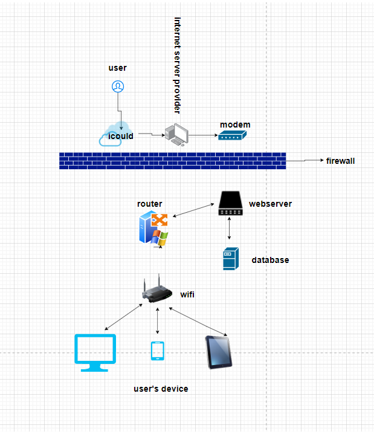
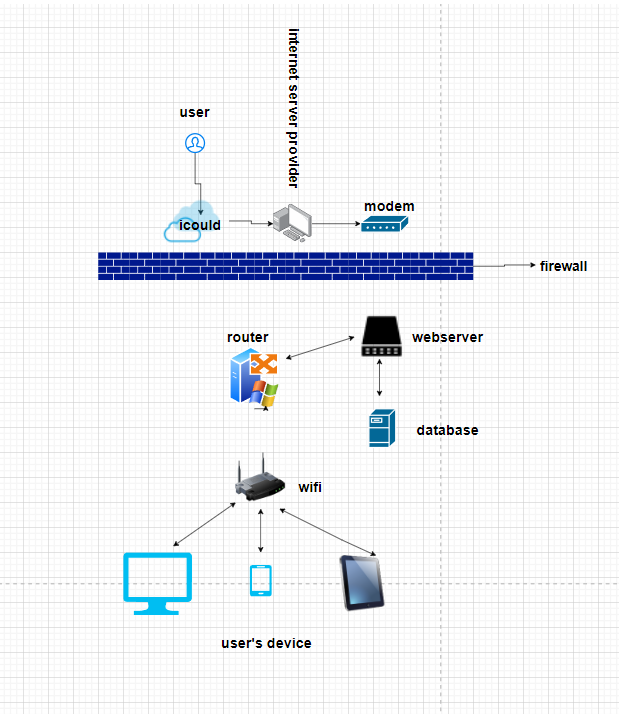

Project Name: Creation of a Second-hand Trading Platform for College Students Hardware required: A computer that can write software, a local server Software: codepen writing software ps drawing software icould Values: It is possible to make full use of the idle resources of college students and help them realize their idle resources. With the popularization of 5G, the improvement of college students' awareness of the use of idle resources, and the improvement of second-hand idle economic infrastructure and supporting systems, the second-hand realization market may become a new market. development point
 

| Name | Drake | Evan |
|---|---|---|
| System Name | CRM | CRM |
| System Objectives | Unified collection and management of customer information | Improve the competitiveness of your website |
| 3 essential system features and components | 1. Get market information 2. Customer after-sale and pre-sale feedback 3. Follow up after feedback |
1.Business Analysis 2. After-sales and pre-sales management 3. Business process |
| 3 essential hardware from this system | 1. server 2. computer 3. phone |
1. Broadband network 2. Modem 3. Computer |
| 3 essential software from this system | 1.Tinder Firewall
2. MariaDB 3. Internet Information Services (IIS) 10.0 Express |
1.Kaspersky Firewall
2. MySQL 3. Internet Information Services (IIS) 10.0 Express |
| 2 external system components | 1.SalesForce Automation 2.Human Resource Management |
1.Lead Management 2.Customer Service |
| 2 system benefits | 1. Improve customer satisfaction and increase customer desire to buy 2. Optimize product packaging and enhance product image |
1. Increase marketing, increase brand awareness and attract more customers 2. Improve employees' sense of belonging |
| 2 project difficulties | 1. The system requires a lot of maintenance 2. Many after-sales and pre-sales personnel are required |
1. Need to build an employee intranet 2. The technical requirements of the employees are required, the employees need certain skills, and the employees need trainings |